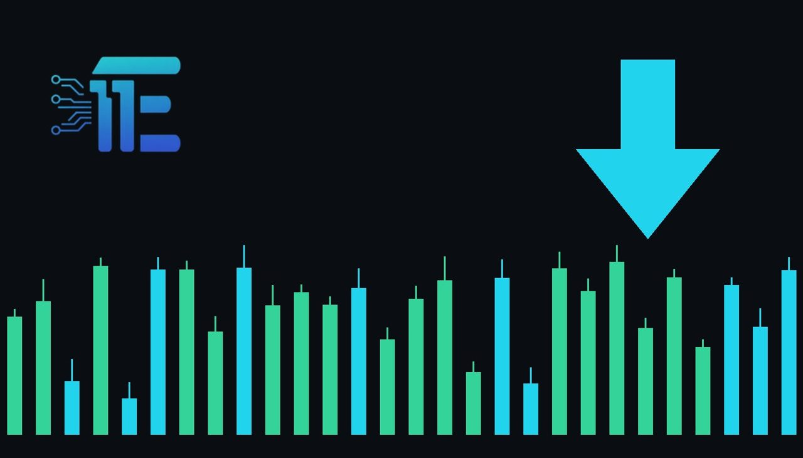

Gold Falls Below $3,800 Approaching 14-Month Lowsតម្លៃ មាស ធ្លាក់ចុះក្រោម 3,800 ដុល្លារ ខិតជិតកម្រិតទាបបំផុតក្នុងរយៈពេល 14 ខែ
XAU/USD impact: ▼ Bearishផលប៉ះពាល់លើ XAU/USD: ▼ ធ្លាក់

Gold prices dropped below $3,800 an ounce on Wednesday as hawkish Federal Reserve signals deepened the bullion selloff. Higher interest-rate expectations reduce the appeal of non-yielding gold and reinforce downward pressure on XAU/USD.
តម្លៃ មាស បានធ្លាក់ចុះក្រោម 3,800 ដុល្លារក្នុងមួយអោនកាលពីថ្ងៃពុធ ដោយសារសញ្ញា hawkish ពី Fed បានធ្វើឱ្យការលក់បង្ខំកាន់តែខ្លាំង។ ការរំពឹងទុកលើការដំឡើង អត្រាការប្រាក់ បន្ថែមបានកាត់បន្ថយភាពទាក់ទាញនៃ មាស និងបង្កើនសម្ពាធធ្លាក់ចុះលើ XAU/USD។
Gold prices experienced an extended retreat on Wednesday, breaking beneath the $3,800 an ounce threshold and moving toward fresh 14-month lows. This downward momentum accelerated as market participants reacted to hawkish policy signals from the Federal Reserve alongside persistent inflation concerns, which collectively deepened the selloff across bullion markets.
តម្លៃ មាស បានបន្តការធ្លាក់ចុះបន្ថែមទៀតកាលពីថ្ងៃពុធ ដោយបានធ្លាក់ចុះក្រោម 3,800 ដុល្លារក្នុងមួយអោន និងខិតជិតដល់កម្រិតទាបបំផុតថ្មីក្នុងរយៈពេល 14 ខែ។ សម្ពាធធ្លាក់ចុះនេះបានកើនឡើងយ៉ាងឆាប់រហ័ស ខណៈដែល ទីផ្សារ ឆ្លើយតបទៅនឹងសញ្ញា hawkish ពីធនាគារកណ្តាលអាមេរិក Fed រួមជាមួយការព្រួយបារម្ភឥតឈប់ឈរអំពីបញ្ហា អតិផរណា ដែលកត្តាទាំងនេះបានជំរុញឱ្យការលក់ មាស កាន់តែខ្លាំងឡើង។
The transmission channel to gold operates primarily through interest rate expectations and the opportunity cost of holding non-yielding assets. When persistent inflation concerns prompt hawkish communication from Federal Reserve officials, investors reinforce their expectations for additional interest-rate increases. Higher policy rate expectations generally boost bond yields and provide support to the US dollar, which diminishes the relative appeal of holding bullion.
យន្តការជះឥទ្ធិពលមកលើ មាស គឺដំណើរការជាចម្បងតាមរយៈការរំពឹងទុកលើ អត្រាការប្រាក់ និងការចំណាយលើឱកាសនៃការកាន់កាប់ទ្រព្យសកម្មដែលមិនផ្តល់ផលប័ត្រ។ នៅពេលដែលការព្រួយបារម្ភអំពី អតិផរណា នៅតែបន្តជំរុញឱ្យមន្ត្រី Fed បង្ហាញជំហរ hawkish វិនិយោគិនកាន់តែបង្កើនការរំពឹងទុកចំពោះការដំឡើង អត្រាការប្រាក់ បន្ថែមទៀត។ ការរំពឹងទុកលើ អត្រាការប្រាក់ កាន់តែខ្ពស់ជាទូទៅផ្តល់ការគាំទ្រដល់ប្រាក់ ដុល្លារអាមេរិក និងកាត់បន្ថយភាពទាក់ទាញនៃការវិនិយោគលើ មាស។
Looking at market dynamics, gold typically faces further downward pressure if ongoing inflation worries continue to drive Federal Reserve policymakers toward aggressive interest-rate hikes. Such an environment sustains upward pressure on rate expectations, often weighing on bullion valuation. Conversely, gold could find support if stubborn inflation eventually sparks stronger safe-haven demand or if signs emerge that monetary tightening may pause, easing pressure on precious metals.
ចំពោះស្ថានភាព ទីផ្សារ ជាទូទៅ មាស នឹងប្រឈមមុខនឹងសម្ពាធធ្លាក់ចុះបន្ថែមទៀត ប្រសិនបើការព្រួយបារម្ភអំពី អតិផរណា នៅតែបន្តជំរុញឱ្យ Fed ប្រកាន់យកគោលនយោបាយដំឡើង អត្រាការប្រាក់ យ៉ាងតឹងរ៉ឹងជាបន្តបន្ទាប់។ ផ្ទុយទៅវិញ តម្លៃ មាស អាចទទួលបានការគាំទ្រឡើងវិញ ប្រសិនបើបញ្ហា អតិផរណា ដ៏រ៉ាំរ៉ៃនេះជំរុញឱ្យមានតម្រូវការទ្រព្យសុវត្ថិភាពខ្លាំងជាងមុន ឬប្រសិនបើមានសញ្ញាបង្ហាញថាការរឹតបន្តឹងគោលនយោបាយរូបិយវត្ថុអាចនឹងផ្អាក ដែលជួយបន្ធូរបន្ថយសម្ពាធលើលោហៈធាតុមានតម្លៃ។
Moving forward, gold traders should closely monitor future Federal Reserve communications for any shifts in policy tone regarding further rate adjustments. Market participants will also assess whether persistent inflation concerns remain strong enough to keep rate hike expectations elevated or whether bullion can stabilize after approaching its 14-month lows below $3,800 an ounce.
សម្រាប់ជំហានបន្ទាប់ អ្នកជួញដូរ មាស គួរតែតាមដានយ៉ាងដិតដល់នូវការថ្លែងសារជាបន្តបន្ទាប់ពីសំណាក់ Fed ដើម្បីពិនិត្យមើលការផ្លាស់ប្តូរជំហរគោលនយោបាយទាក់ទងនឹង អត្រាការប្រាក់ នាពេលខាងមុខ។ ទន្ទឹមនឹងនេះ ទីផ្សារ ក៏នឹងតាមដានផងដែរថាតើការព្រួយបារម្ភអំពី អតិផរណា នៅតែបន្តរុញច្រានការរំពឹងទុកលើការដំឡើង អត្រាការប្រាក់ ឱ្យខ្ពស់តទៅទៀត ឬថាតើ មាស អាចទប់លំនឹងបានបន្ទាប់ពីធ្លាក់ចុះមកជិតកម្រិតទាបបំផុតក្នុងរយៈពេល 14 ខែក្រោម 3,800 ដុល្លារក្នុងមួយអោន។
Key takeawaysចំណុចសំខាន់ៗ
- Gold declined below $3,800 an ounce on Wednesday, approaching fresh 14-month lows.
- តម្លៃ មាស បានធ្លាក់ចុះក្រោម 3,800 ដុល្លារក្នុងមួយអោនកាលពីថ្ងៃពុធ ដោយខិតជិតកម្រិតទាបបំផុតថ្មីក្នុងរយៈពេល 14 ខែ។
- Hawkish Federal Reserve signals and persistent inflation reinforced expectations of further interest-rate increases.
- សញ្ញា hawkish ពី Fed និងការព្រួយបារម្ភអំពី អតិផរណា បានពង្រឹងការរំពឹងទុកលើការដំឡើង អត្រាការប្រាក់ បន្ថែម។
- Higher rate expectations raise the opportunity cost of holding bullion, intensifying the market selloff.
- ការរំពឹងទុកលើ អត្រាការប្រាក់ កាន់តែខ្ពស់បានបង្កើនការចំណាយលើឱកាសនៃការកាន់កាប់ មាស និងជំរុញឱ្យមានការលក់ចេញកាន់តែខ្លាំង។
Original commentary by THE MARKET CODE, based on public reporting from Yahoo! Finance: GC=F News. Written with the help of AI. Educational only, not financial advice.
មតិវិភាគដើមដោយ THE MARKET CODE ផ្អែកលើការរាយការណ៍សាធារណៈពី Yahoo! Finance: GC=F News។ សរសេរដោយមានជំនួយពី AI។ មាតិកាអប់រំប៉ុណ្ណោះ មិនមែនជាដំបូន្មានហិរញ្ញវត្ថុទេ។